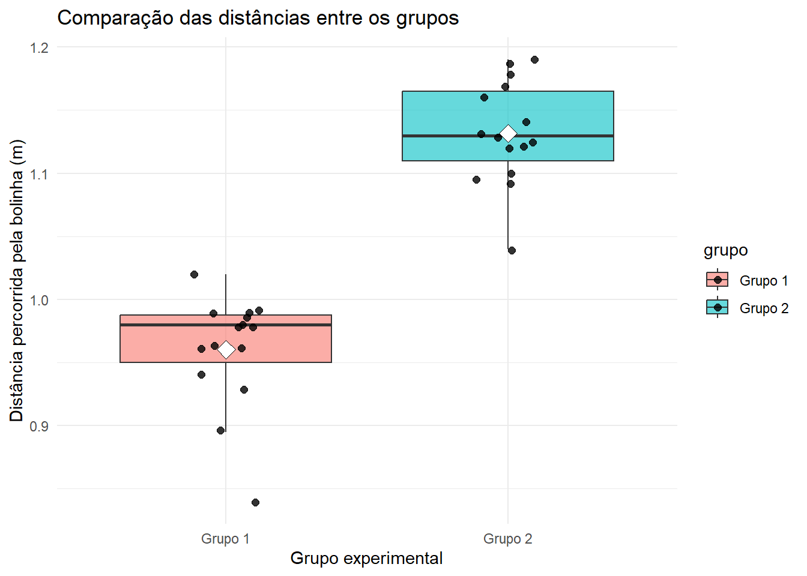

Este relatório descreve a análise de um experimento realizado com uma catapulta, onde o objetivo principal era comparar a eficácia de duas configurações distintas (Grupo 1 e Grupo 2) na distância do arremesso de uma bolinha. A distância alcançada serviu como indicador da performance da configuração sob diferentes níveis de variáveis controladas.
2 Objetivos
2.1 Objetivo geral
Comparar estatisticamente duas configurações da catapulta e verificar qual produz maior distância média de lançamento.
2.2 Objetivos específicos
Calcular as estatísticas descritivas das populações;
Estimar as médias dos grupos;
Realizar um teste de hipótese para a comparação das médias;
Interpretar os resultados obtidos;
Identificar qual configuração apresenta melhor desempenho.
3 Metodologia
Foram analisados dois grupos experimentais independentes:
Grupo 1
O− (nível II)
A+ (nível I)
A− (nível II)
B+ (nível III)
Grupo 2
O− (nível II)
A+ (nível I)
A− (nível II)
B+ (nível VII)
Cada grupo foi composto por:
\[
n_1 = n_2 = 15
\] A variável utilizada como resposta foi distância alcançada pela bolinha.
Utilizamos o tamanho do piso como referência:
\[
1,12m
\] A variável a ser testada foi:
\[H_0: \mu_1 = \mu_2\] contra
\[
H_1: \mu_1 \neq \mu_2
\]
onde (_1) e (_2) representam as médias populacionais das distâncias alcançadas pelos Grupos 1 e 2.
O Grupo 1 apresentou uma distância média de 0.9603m e um desvio padrão de 4.48cm, enquanto o Grupo 2 apresentou uma distância média de 1.1317m e desvio-padrão de 4.12cm. Observa-se que o Grupo 2 apresentou uma maior distância média de lançamentos, além de possuir um desvio-padrão um pouco menor dos resultados.
5 Teste t de Student
Teste t de Student Foi aplicado o teste t de Student para duas amostras independentes, considerando nível de significância de: \[
\alpha = 0,05
\] Como os desvios-padrão dos dois grupos são próximos, utilizou-se a versão do teste t com variâncias consideradas iguais.
\[
EP = s_p \sqrt{\frac{1}{n_1}+\frac{1}{n_2}}
\]\[
EP = 0,0430 \sqrt{\frac{1}{15}+\frac{1}{15}}
\]\[
EP \approx 0,0157
\] A estatística do teste é: \[
t = \frac{\bar{x}_1-\bar{x}_2}{EP}
\]\[
t = \frac{0,9603-1,1317}{0,0157}
\]
\[
p \approx 1,36 \times 10^{-11}
\] Como: \[
p < 0,05
\] conclui-se que existe diferença estatisticamente significativa entre as médias dos dois grupos.
6 Discussão dos resultados
O teste t de Student indicou que a diferença entre as médias dos Grupos 1 e 2 não ocorreu apenas por variação aleatória dos dados. O Grupo 2 apresentou média de lançamento igual a (1,1317m), enquanto o Grupo 1 apresentou média igual a (0,9603m).
A diferença média entre os grupos foi:
\[
(1,1317 - 0,9603 = 0,1714m)
\] Ou seja, aproximadamente:
\[
(17,14cm)
\] Além disso, o Grupo 2 apresentou desvio-padrão ligeiramente menor, indicando resultados um pouco mais concentrados em torno da média. Assim, além de alcançar maior distância média, a configuração do Grupo 2 também mostrou uma regularidade semelhante ou ligeiramente melhor.
Portanto, considerando o experimento realizado, há evidências estatísticas suficientes para afirmar que o Grupo 2 apresentou melhor desempenho na distância percorrida pela bolinha lançada pela catapulta.
7 Aplicação em linguagem R
Código
# Dados do Grupo 1# c() cria um vetor com os valores observadosgrupo1 <-c(0.93, 1.02, 0.98, 0.96, 0.84, 0.99, 0.94, 0.98,0.965, 0.99, 0.96, 0.99, 0.985, 0.98, 0.895)# Dados do Grupo 2grupo2 <-c(1.04, 1.18, 1.16, 1.12, 1.17, 1.09, 1.10, 1.12,1.13, 1.14, 1.095, 1.13, 1.185, 1.19, 1.125)# length() calcula o tamanho da amostran1 <-length(grupo1)n2 <-length(grupo2)# mean() calcula a média aritméticamedia1 <-mean(grupo1)media2 <-mean(grupo2)# sd() calcula o desvio-padrão amostraldesvio1 <-sd(grupo1)desvio2 <-sd(grupo2)# t.test() realiza o teste t de Student# alternative = "two.sided" indica teste bilateral# var.equal = TRUE indica que estamos considerando variâncias iguais# conf.level = 0.95 define nível de confiança de 95%teste_t <-t.test(grupo1, grupo2,alternative ="two.sided",var.equal =TRUE,conf.level =0.95)# print() mostra o resultado do teste na telaprint(teste_t)
Two Sample t-test
data: grupo1 and grupo2
t = -10.908, df = 28, p-value = 1.365e-11
alternative hypothesis: true difference in means is not equal to 0
95 percent confidence interval:
-0.2035069 -0.1391597
sample estimates:
mean of x mean of y
0.9603333 1.1316667
Código
# cat() imprime textos e resultados organizadoscat("Média do Grupo 1:", media1, "\n")
Média do Grupo 1: 0.9603333
Código
cat("Média do Grupo 2:", media2, "\n")
Média do Grupo 2: 1.131667
Código
cat("Desvio-padrão do Grupo 1:", desvio1, "\n")
Desvio-padrão do Grupo 1: 0.04477988
Código
cat("Desvio-padrão do Grupo 2:", desvio2, "\n")
Desvio-padrão do Grupo 2: 0.04117327
Código
# library() carrega o pacote ggplot2library(ggplot2)# data.frame() cria uma tabela de dados# rep() repete o nome dos grupos conforme o número de observações# c() junta os valores dos dois grupos em um único vetordados <-data.frame(grupo =rep(c("Grupo 1", "Grupo 2"), each =15),distancia =c(grupo1, grupo2))# ggplot() inicia a construção do gráfico# aes() define as variáveis usadas no gráfico# geom_boxplot() cria o boxplot# geom_jitter() adiciona os pontos individuais# stat_summary() adiciona a média de cada grupo# labs() adiciona títulos e nomes aos eixos# theme_minimal() aplica um tema visual mais limpoggplot(dados, aes(x = grupo, y = distancia, fill = grupo)) +geom_boxplot(alpha =0.6, outlier.shape =NA) +geom_jitter(width =0.12, size =2, alpha =0.8) +stat_summary(fun = mean,geom ="point",shape =23,size =4,fill ="white") +labs(title ="Comparação das distâncias entre os grupos",x ="Grupo experimental",y ="Distância percorrida pela bolinha (m)") +theme_minimal()

Esse gráfico mostra a distribuição das distâncias dos dois grupos, os pontos individuais de cada lançamento e a média marcada pelo ponto branco.
8 Conclusão
Com base nos dados analisados, conclui-se que a configuração utilizada pelo Grupo 2 apresentou melhor desempenho no lançamento da bolinha pela catapulta. O teste t de Student apresentou valor de \[(t \approx -10,91) , (gl = 28)\] E p-valor aproximadamente igual a \[(1,365 \times 10^{-11}).\] Como o p-valor foi menor que (0,05), rejeita-se a hipótese nula de igualdade entre as médias. Portanto, há evidências estatísticas suficientes para afirmar que existe diferença significativa entre os grupos.
Assim, dentro das condições do experimento e assumindo normalidade dos dados, a configuração do Grupo 2 foi a mais eficiente, pois apresentou maior distância média de lançamento e desempenho mais favorável em relação ao Grupo 1.
9 Referências
[1] BATISTA, Ben Deivide. Livro de Estatística. Universidade Federal de São João del-Rei, UFSJ.
[2] MORETTIN, Pedro Alberto; BUSSAB, Wilton de Oliveira. Estatística básica. 9. ed. São Paulo: Saraiva, 2017.
Código fonte
---# Só mude aqui!!!!author: "Igor e Lucas"title: "Relatório 08 - Comparação de duas populações"bibliography: referencias.bib# A partir daqui nao faca alteracoes!!!!!link-citations: truecsl: associacao-brasileira-de-normas-tecnicas-ipea.cslsubtitle: "<a href='https://bendeivide.github.io/courses/epaec/' target='_blank'>Estatística e Probabilidade</a> </br> <a href='https://bendeivide.github.io' target='_blank'>Prof. Ben Dêivide (DEFIM/CAP/UFSJ)</a>"include-before-body: header.htmldate: 06/29/2026lang: pt-BRformat: html: toc: true number-sections: true theme: bootstrap #css: styles.css code-fold: true code-tools: trueexecute: echo: true warning: false message: false---## IntroduçãoEste relatório descreve a análise de um experimento realizado com uma catapulta, onde o objetivo principal era comparar a eficácia de duas configurações distintas (Grupo 1 e Grupo 2) na distância do arremesso de uma bolinha. A distância alcançada serviu como indicador da performance da configuração sob diferentes níveis de variáveis controladas. ## Objetivos### Objetivo geralComparar estatisticamente duas configurações da catapulta e verificar qual produz maior distância média de lançamento.### Objetivos específicos- Calcular as estatísticas descritivas das populações;- Estimar as médias dos grupos;- Realizar um teste de hipótese para a comparação das médias;- Interpretar os resultados obtidos;- Identificar qual configuração apresenta melhor desempenho.## MetodologiaForam analisados dois grupos experimentais independentes:Grupo 1- O− (nível II)- A+ (nível I)- A− (nível II)- B+ (nível III)Grupo 2- O− (nível II)- A+ (nível I)- A− (nível II)- B+ (nível VII)Cada grupo foi composto por:$$n_1 = n_2 = 15$$A variável utilizada como resposta foi distância alcançada pela bolinha.Utilizamos o tamanho do piso como referência:$$1,12m$$A variável a ser testada foi: $$H_0: \mu_1 = \mu_2$$ contra $$H_1: \mu_1 \neq \mu_2$$onde \(\mu_1\) e \(\mu_2\) representam as médias populacionais das distâncias alcançadas pelos Grupos 1 e 2.## Resultados obtidosOs resultados obtidos para os Grupos 1 e 2 foram:Grupo 1(m): 0.93; 1.02; 0.98; 0.96; 0.84; 0.99; 0.94; 0.98; 0.965; 0.99; 0.96; 0.99; 0.985; 0.98; 0.895.Média do Grupo 1:$$\bar{x}=0.9603\ m $$Desvio padrão amostral:$$s_1 \approx 4.48\ cm $$Grupo 2(m): 1.04; 1.18; 1.16; 1.12; 1.17; 1.09; 1.10; 1.12; 1.13; 1.14; 1.095; 1.13; 1.185; 1.19; 1.125.Média do Grupo 2: $$ \bar{x}=1.1317\ m$$Desvio-padrão amostral: $$s_2 \approx 4.12\ cm$$### Análise dos resultados calculados O Grupo 1 apresentou uma distância média de 0.9603m e um desvio padrão de 4.48cm, enquanto o Grupo 2 apresentou uma distância média de 1.1317m e desvio-padrão de 4.12cm. Observa-se que o Grupo 2 apresentou uma maior distância média de lançamentos, além de possuir um desvio-padrão um pouco menor dos resultados.## Teste t de StudentTeste t de StudentFoi aplicado o teste t de Student para duas amostras independentes, considerando nível de significância de:$$\alpha = 0,05$$Como os desvios-padrão dos dois grupos são próximos, utilizou-se a versão do teste t com variâncias consideradas iguais.As hipóteses testadas foram:$$H_0: \mu_1 = \mu_2$$$$H_1: \mu_1 \neq \mu_2$$Temos:$$\bar{x}_1 = 0,9603$$$$\bar{x}_2 = 1,1317$$$$s_1 = 0,0448$$$$s_2 = 0,0412$$$$n_1 = n_2 = 15$$A variância combinada é dada por:$$s_p^2 = \frac{(n_1-1)s_1^2 + (n_2-1)s_2^2}{n_1+n_2-2}$$Substituindo os valores:$$s_p^2 = \frac{14(0,0448)^2 + 14(0,0412)^2}{28}$$$$s_p^2 \approx 0,00185$$Logo:$$s_p \approx 0,0430$$O erro padrão da diferença entre as médias é:$$EP = s_p \sqrt{\frac{1}{n_1}+\frac{1}{n_2}}$$$$EP = 0,0430 \sqrt{\frac{1}{15}+\frac{1}{15}}$$$$EP \approx 0,0157$$A estatística do teste é:$$t = \frac{\bar{x}_1-\bar{x}_2}{EP}$$$$t = \frac{0,9603-1,1317}{0,0157}$$$$t \approx -10,91$$Os graus de liberdade são:$$gl = n_1+n_2-2 = 28$$Para $$(alpha = 0,05),(gl = 28)$$O valor crítico bilateral é aproximadamente:$$t_{crítico} = \pm 2,048$$Como:$$|t| = 10,91 > 2,048$$rejeitamos a hipótese nula $$(H_0)$$O p-valor obtido foi aproximadamente:$$p \approx 1,36 \times 10^{-11}$$Como:$$p < 0,05$$conclui-se que existe diferença estatisticamente significativa entre as médias dos dois grupos.## Discussão dos resultadosO teste t de Student indicou que a diferença entre as médias dos Grupos 1 e 2 não ocorreu apenas por variação aleatória dos dados. O Grupo 2 apresentou média de lançamento igual a \(1,1317m\), enquanto o Grupo 1 apresentou média igual a \(0,9603m\).A diferença média entre os grupos foi:$$(1,1317 - 0,9603 = 0,1714m)$$Ou seja, aproximadamente:$$(17,14cm)$$Além disso, o Grupo 2 apresentou desvio-padrão ligeiramente menor, indicando resultados um pouco mais concentrados em torno da média. Assim, além de alcançar maior distância média, a configuração do Grupo 2 também mostrou uma regularidade semelhante ou ligeiramente melhor.Portanto, considerando o experimento realizado, há evidências estatísticas suficientes para afirmar que o Grupo 2 apresentou melhor desempenho na distância percorrida pela bolinha lançada pela catapulta.## Aplicação em linguagem R```{R}# Dados do Grupo 1# c() cria um vetor com os valores observadosgrupo1 <-c(0.93, 1.02, 0.98, 0.96, 0.84, 0.99, 0.94, 0.98,0.965, 0.99, 0.96, 0.99, 0.985, 0.98, 0.895)# Dados do Grupo 2grupo2 <-c(1.04, 1.18, 1.16, 1.12, 1.17, 1.09, 1.10, 1.12,1.13, 1.14, 1.095, 1.13, 1.185, 1.19, 1.125)# length() calcula o tamanho da amostran1 <-length(grupo1)n2 <-length(grupo2)# mean() calcula a média aritméticamedia1 <-mean(grupo1)media2 <-mean(grupo2)# sd() calcula o desvio-padrão amostraldesvio1 <-sd(grupo1)desvio2 <-sd(grupo2)# t.test() realiza o teste t de Student# alternative = "two.sided" indica teste bilateral# var.equal = TRUE indica que estamos considerando variâncias iguais# conf.level = 0.95 define nível de confiança de 95%teste_t <-t.test(grupo1, grupo2,alternative ="two.sided",var.equal =TRUE,conf.level =0.95)# print() mostra o resultado do teste na telaprint(teste_t)# cat() imprime textos e resultados organizadoscat("Média do Grupo 1:", media1, "\n")cat("Média do Grupo 2:", media2, "\n")cat("Desvio-padrão do Grupo 1:", desvio1, "\n")cat("Desvio-padrão do Grupo 2:", desvio2, "\n")``````{R}# library() carrega o pacote ggplot2library(ggplot2)# data.frame() cria uma tabela de dados# rep() repete o nome dos grupos conforme o número de observações# c() junta os valores dos dois grupos em um único vetordados <-data.frame(grupo =rep(c("Grupo 1", "Grupo 2"), each =15),distancia =c(grupo1, grupo2))# ggplot() inicia a construção do gráfico# aes() define as variáveis usadas no gráfico# geom_boxplot() cria o boxplot# geom_jitter() adiciona os pontos individuais# stat_summary() adiciona a média de cada grupo# labs() adiciona títulos e nomes aos eixos# theme_minimal() aplica um tema visual mais limpoggplot(dados, aes(x = grupo, y = distancia, fill = grupo)) +geom_boxplot(alpha =0.6, outlier.shape =NA) +geom_jitter(width =0.12, size =2, alpha =0.8) +stat_summary(fun = mean,geom ="point",shape =23,size =4,fill ="white") +labs(title ="Comparação das distâncias entre os grupos",x ="Grupo experimental",y ="Distância percorrida pela bolinha (m)") +theme_minimal()```Esse gráfico mostra a distribuição das distâncias dos dois grupos, os pontos individuais de cada lançamento e a média marcada pelo ponto branco.## ConclusãoCom base nos dados analisados, conclui-se que a configuração utilizada pelo Grupo 2 apresentou melhor desempenho no lançamento da bolinha pela catapulta. O teste t de Student apresentou valor de $$(t \approx -10,91) , (gl = 28)$$ E p-valor aproximadamente igual a $$(1,365 \times 10^{-11}).$$Como o p-valor foi menor que (0,05), rejeita-se a hipótese nula de igualdade entre as médias. Portanto, há evidências estatísticas suficientes para afirmar que existe diferença significativa entre os grupos.Assim, dentro das condições do experimento e assumindo normalidade dos dados, a configuração do Grupo 2 foi a mais eficiente, pois apresentou maior distância média de lançamento e desempenho mais favorável em relação ao Grupo 1.## Referências[1] BATISTA, Ben Deivide. Livro de Estatística. Universidade Federal de São João del-Rei, UFSJ.[2] MORETTIN, Pedro Alberto; BUSSAB, Wilton de Oliveira. Estatística básica. 9. ed. São Paulo: Saraiva, 2017.